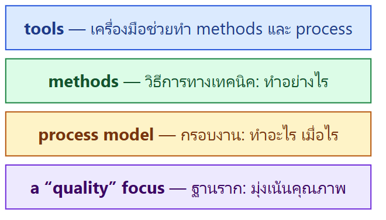
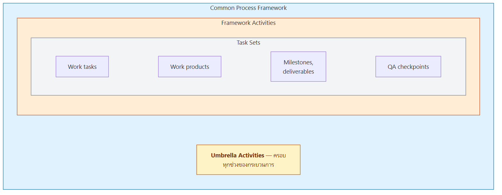
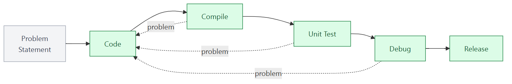
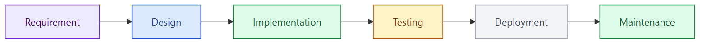
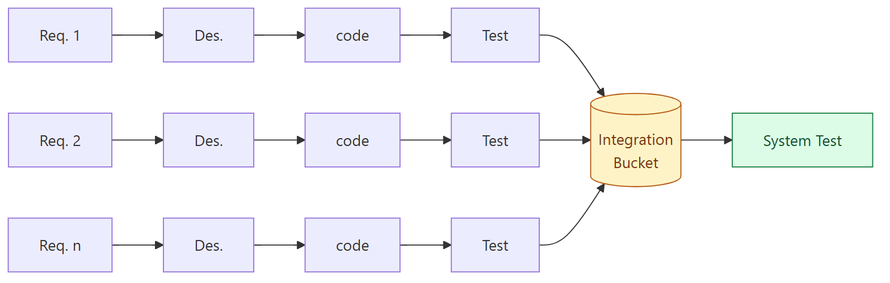
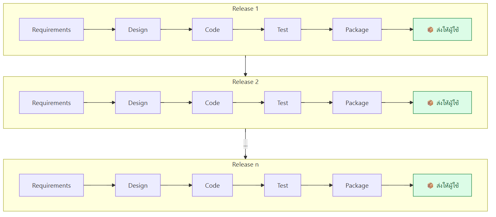
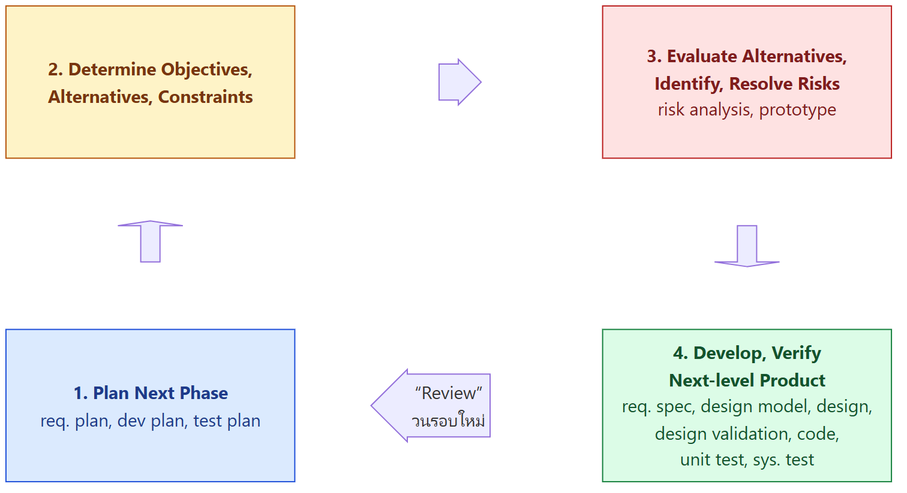
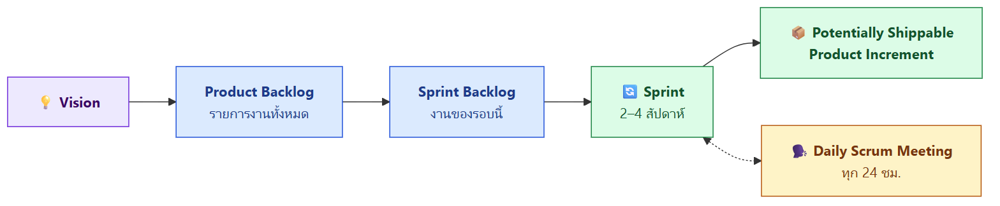
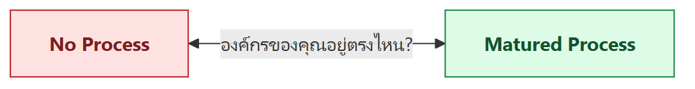

ภาพรวมบทนี้ L1 บอกว่า SE คือการพัฒนาซอฟต์แวร์ "อย่างเป็นระบบ" บทนี้ตอบต่อว่า ระบบนั้นหน้าตาเป็นอย่างไร ผ่าน process model ซึ่งเป็นแม่แบบที่กำหนดว่าจะทำงานอะไร เรียงลำดับอย่างไร ใครทำ
บทนี้เริ่มจากกรณีศึกษาความเสียหายจริง แล้วอธิบายกิจกรรมพื้นฐานของการพัฒนาซอฟต์แวร์ ต่อด้วยโมเดลแบบดั้งเดิม (Code and Fix, Waterfall, Incremental, Spiral) เทียบกับแบบสมัยใหม่ (Agile / Scrum) พร้อมกรณีศึกษา Spotify และ HealthCare.gov และปิดท้ายด้วยการประเมินความพร้อมของกระบวนการ (process assessment)
1. กรณีศึกษา: เมื่อกระบวนการพัง
ทำไมบทเรื่อง process ถึงเปิดด้วยเหตุการณ์ระบบล่ม? เพราะทั้งสองกรณีไม่ได้เกิดจาก "เขียนโค้ดไม่เป็น" อย่างเดียว แต่เกิดจาก กระบวนการทดสอบและ deploy ที่มีช่องโหว่ ปล่อยให้ความผิดพลาดหลุดไปถึงระบบจริง
Case Study 1: CrowdStrike Outage (2024)
- ต้นเหตุ: บั๊กใน Content Validator ซึ่งเป็นส่วนหนึ่งของ deployment process ของ CrowdStrike ปล่อยให้อัปเดตที่ผิดพลาดหลุดออกไป (CrowdStrike เปิดเผยเมื่อ 24 กรกฎาคม)
- ผล: เครื่อง Windows จำนวนมากทั่วโลกขึ้น จอฟ้า (Blue Screen) แล้ว restart วนไป
- บทเรียน: ตัว "ด่านตรวจ" ในกระบวนการเองก็มีบั๊กได้ ถ้าไม่มีการป้องกันหลายชั้น ความผิดพลาดเล็ก ๆ ก็ลุกลามเป็นวงกว้าง
- อ้างอิง: YouTube และ TechRepublic (2024) "CrowdStrike: Buggy Validator Started Massive Outage"
Case Study 2: Knight Capital (2012)
- ระบบเทรดหุ้นของ Knight Capital Group ส่งคำสั่งซื้อขายหุ้นที่ไม่ได้ตั้งใจออกไปจำนวนมหาศาล
- อัลกอริทึมที่ผิดพลาด เทรดต่อเนื่องประมาณ 45 นาที กว่าจะปิดระบบได้
- เสียหายมากกว่า 440 ล้านดอลลาร์
- ต้นเหตุจริงไม่ใช่แค่บั๊ก แต่เป็นความล้มเหลวของ การ deploy และการควบคุมการปฏิบัติงาน ได้แก่
- ทดสอบไม่เพียงพอ
- ไม่มีกลไกป้องกัน (safeguards)
- บริหารความเสี่ยงไม่ดี
- ผลคือโค้ดที่ผิดหลุดขึ้นไปทำงานบนระบบเทรดจริง
💡 ทั้งสองเคสสอนเรื่องเดียวกัน: กระบวนการที่ดีคือกำแพงกั้นความผิดพลาดของคน บทนี้จึงสำคัญ
💡 เล่าเพิ่ม (ไม่ได้อยู่ในสไลด์): ใน Knight Capital โค้ดเก่าที่ไม่ใช้แล้วถูกเปิดใช้งานโดยไม่ตั้งใจ เพราะอัปเดตโค้ดใหม่ไม่ครบทุกเซิร์ฟเวอร์
2. กิจกรรมพื้นฐานในการพัฒนาซอฟต์แวร์ (Common Activities)
ไม่ว่าจะใช้โมเดลไหน ก็มีกิจกรรมเหล่านี้เสมอ ต่างกันแค่ ลำดับ จำนวนรอบ และความละเอียด
| # | กิจกรรม | ทำอะไร |
|---|---|---|
| 1 | Requirements analysis | หาว่าผู้ใช้ต้องการอะไร และกำหนดว่าซอฟต์แวร์ต้องทำอะไร |
| 2 | System and software design | วางโครงสร้างระบบ และกำหนดว่าส่วนประกอบต่าง ๆ ทำงานร่วมกันอย่างไร |
| 3 | Implementation (coding) | เขียนโค้ดสร้างซอฟต์แวร์ |
| 4 | Testing and quality assurance | หาข้อผิดพลาด และตรวจว่าตรงกับ requirement |
| 5 | Deployment and release | ส่งมอบซอฟต์แวร์ไปใช้ในสภาพแวดล้อมจริง |
| 6 | Maintenance and evolution | แก้ปัญหา อัปเดตฟีเจอร์ และปรับซอฟต์แวร์ไปตามเวลา |
3. Software Engineering: A Layered Technology
SE ถูกมองเป็น ชั้น ๆ ซ้อนกัน โดยมีฐานรากคือคุณภาพ

- Quality focus เป็นฐานของทุกอย่าง
- Process เป็นตัวยึดชั้นต่าง ๆ ไว้ด้วยกัน กำหนดกรอบการทำงาน
- Methods คือวิธีทำเชิงเทคนิค เช่น การวิเคราะห์ requirement การออกแบบ การทดสอบ
- Tools ช่วยให้ process และ methods ทำได้ง่ายหรืออัตโนมัติ
(คำอธิบายหน้าที่ของแต่ละชั้นเสริมจากแนวคิดของ Pressman สไลด์มีแค่ภาพชั้น)
4. Process Framework และ Development Framework
A Process Framework (กรอบกระบวนการ)
โครงสร้างซ้อนกันเป็นกล่อง:

| ชั้น | ความหมาย |
|---|---|
| Common Process Framework | กรอบใหญ่ที่ใช้ได้กับทุกโครงการ |
| Framework Activities | กิจกรรมหลัก เช่น requirement, design, coding, testing |
| Task Sets | ชุดงานย่อยของแต่ละกิจกรรม ประกอบด้วย |
| → Work tasks | งานที่ต้องทำจริง |
| → Work products | ชิ้นงานที่ได้ เช่น เอกสาร โค้ด |
| → Milestones, deliverables | จุดวัดความคืบหน้า และของที่ต้องส่ง |
| → QA checkpoints | จุดตรวจคุณภาพ |
| Umbrella Activities | กิจกรรมที่ครอบทุกช่วง (หัวข้อ 5) |
A Development Framework
ต่างจาก process framework ข้างบน คำนี้หมายถึง framework สำหรับเขียนโปรแกรม (เช่น React, Django, Laravel)
| คุณสมบัติ | ความหมาย |
|---|---|
| Foundation | ให้โครงสร้างหรือแม่แบบพื้นฐาน ไม่ต้องเริ่มจากศูนย์ |
| Components and Tools | มีส่วนประกอบและเครื่องมือสำเร็จรูป ทำให้พัฒนาเร็วขึ้น |
| Best Practices and Guidelines | มีแนวปฏิบัติที่ดี ช่วยให้โค้ดเป็นระเบียบและมีประสิทธิภาพ |
| Customization | แก้ไขและเพิ่มฟังก์ชันให้ตรงความต้องการได้ |
(ตัวอย่างชื่อ framework เสริมเอง ไม่ได้อยู่ในสไลด์)
⚠️ อย่าสับสน: Process framework = กรอบ "วิธีทำงาน" ของทีม ส่วน Development framework = "โครงโค้ด" สำเร็จรูป
5. Umbrella Activities
กิจกรรมที่ ทำต่อเนื่องตลอดโครงการ ไม่ได้อยู่ช่วงใดช่วงหนึ่ง (ต่อจากแนวคิด umbrella activity ใน L1) มี 8 อย่าง:
| # | Umbrella activity | ทำอะไร |
|---|---|---|
| 1 | Software project management | วางแผน ติดตาม และควบคุมโครงการ (POMA จาก L1) |
| 2 | Formal technical reviews | ประชุมตรวจชิ้นงานอย่างเป็นทางการ เพื่อหาข้อผิดพลาดก่อนส่งต่อ |
| 3 | Software quality assurance | กิจกรรมที่ทำให้มั่นใจเรื่องคุณภาพ |
| 4 | Software configuration management | จัดการเวอร์ชันและการเปลี่ยนแปลง เช่น ใช้ Git |
| 5 | Work product preparation and production | จัดทำชิ้นงาน เช่น เอกสาร โมเดล ฟอร์ม |
| 6 | Reusability management | กำหนดเกณฑ์และจัดการสิ่งที่นำกลับมาใช้ซ้ำได้ |
| 7 | Measurement | เก็บตัวชี้วัดของกระบวนการ โครงการ และผลิตภัณฑ์ |
| 8 | Risk management | ประเมินและรับมือความเสี่ยง |
(คำอธิบายคอลัมน์ขวาเสริมเอง สไลด์มีแค่ชื่อกิจกรรม)
6. Process Models คืออะไร
นิยามและบทบาท
- เป็น framework มาตรฐาน
- ให้แนวทางในการ ประสานงานและควบคุม task และคนที่ทำ task อย่างเป็นระบบ
- อธิบาย ลำดับกิจกรรม, บทบาท (roles), ชิ้นงาน (artifacts) และ workflow ในการพัฒนาและดูแลระบบซอฟต์แวร์
มีไว้เพื่อ 3 อย่าง:
- ช่วยทีม วางแผน ลงมือทำ และบริหาร โครงการ
- ทำให้ชิ้นงาน สม่ำเสมอและมีคุณภาพ (consistency and quality)
- ช่วย สื่อสารและประสานงาน ระหว่าง stakeholders
💡 คำสำคัญที่สไลด์เน้น: coordination, tasks, people
Process model ต้องกำหนดอะไรบ้าง
- ชุดของ task ที่ต้องทำ
- Input และ output ของแต่ละ task
- Pre-conditions และ post-conditions ของ task (ต้องพร้อมอะไรก่อนเริ่ม และต้องได้อะไรเมื่อจบ)
- ลำดับการไหล ของ task
- คนที่ทำ แต่ละ task
ตัวอย่างโมเดลที่จะเรียน
Code and Fix → Waterfall → Incremental → Spiral → Agile
7. Code and Fix Model

เขียนโค้ด → คอมไพล์ → ทดสอบ → เจอปัญหาก็กลับไปแก้โค้ด → วนจนใช้ได้ → ปล่อย
ข้อสังเกตจากสไลด์
- คนส่วนใหญ่ทำงานแบบนี้ แต่บางคนข้าม unit test หรือ debug ไปเลย
- บางคน เริ่มทำโดยยังไม่เข้าใจ problem statement ซึ่งก็คือ requirement
⚠️ Code and Fix เหมาะกับงานเล็กมาก ๆ เช่น การบ้านเขียนโปรแกรม แต่ถ้าใช้กับระบบใหญ่ จะแก้ไม่จบและไม่มีใครรู้ว่าระบบควรทำอะไรจริง ๆ
8. Waterfall Model
Traditional – Linear and sequential (แบบดั้งเดิม เป็นเส้นตรงและเรียงลำดับ)

Key Characteristics
- ช่วงต่าง ๆ ไม่ซ้อนทับกัน ต้องจบช่วงหนึ่งก่อนเริ่มช่วงถัดไป
- แต่ละช่วงผลิต deliverable ที่เป็น input ของช่วงถัดไป
- เน้นเอกสารและการวางแผน
Pros and Cons
| ✅ Pros | ❌ Cons |
|---|---|
| เรียบง่าย เข้าใจง่าย | ใช้เวลาพัฒนานาน |
| เหมาะกับโครงการเล็กที่ requirement ชัดและไม่เปลี่ยน | ไม่ยืดหยุ่น เมื่อเริ่มพัฒนาแล้วเปลี่ยนยาก |
| เอกสารครบ ช่วยการดูแลระยะยาว | เจอปัญหาช้า เพราะทดสอบหลังเขียนโค้ดเสร็จ |
| ไม่เหมาะกับโครงการที่ requirement เปลี่ยนบ่อยหรือไม่แน่นอนสูง |
💡 เปรียบเทียบ: เหมือน สร้างบ้าน ต้องออกแบบเสร็จก่อนเทฐานราก ถ้าสร้างเสร็จแล้วอยากย้ายห้องน้ำ ต้องทุบใหม่ แพงมาก
9. Incremental Model
แบบ A – Integration Bucket

Key Characteristics
- แต่ละ requirement หลัก พัฒนาแยกกัน ผ่านลำดับเดียวกัน คือ requirement → design → code → unit test
- ชิ้นที่เสร็จแล้ว ถูกรวมเข้า "ถังรวม" (integration bucket) อย่างต่อเนื่อง เพื่อทำ integrated system test
แบบ B – Multiple Release

Key Characteristic
- requirement แต่ละชุดเล็ก ๆ ถูก พัฒนา แพ็ก และปล่อยเป็นหลาย release
⚠️ ความต่าง A vs B: แบบ A รวมทุกชิ้นแล้วส่งครั้งเดียว ส่วนแบบ B ส่งให้ผู้ใช้ทีละ release
Pros and Cons
| ✅ Pros | ❌ Cons |
|---|---|
| Divide and conquer แบ่งแล้วค่อย ๆ พิชิต | ต้องทำงานขนานกันหลายส่วน (parallel execution) |
| เหมาะกับ ระบบใหญ่และซับซ้อนมาก | อาจต้องใช้แรงบริหารจัดการมากขึ้น |
| ปัญหาตอนรวมระบบ (integration challenges) |
💡 ตัวอย่าง: แอปธนาคาร release 1 มีแค่ดูยอดเงินกับโอนเงิน, release 2 เพิ่มจ่ายบิล, release 3 เพิ่มลงทุน (ตัวอย่างเสริม)
10. Spiral Model
โมเดลที่ วนเป็นเกลียว แต่ละรอบผ่าน 4 ช่วง (quadrant) และแต่ละรอบใหญ่ขึ้นเรื่อย ๆ (ทำงานมากขึ้น ต้นทุนสะสมมากขึ้น) โดยมีจุด "Review" คั่นระหว่างรอบ

| Quadrant | กิจกรรม | ตัวอย่างงานในภาพ |
|---|---|---|
| 1. Plan Next Phase | วางแผนรอบถัดไป | req. plan, dev plan, test plan |
| 2. Determine Objectives, Alternatives, Constraints | กำหนดเป้าหมาย ทางเลือก และข้อจำกัด | – |
| 3. Evaluate Alternatives, Identify, Resolve Risks | ประเมินทางเลือก หาและแก้ความเสี่ยง | risk analysis, prototype |
| 4. Develop, Verify Next-level Product | พัฒนาและตรวจสอบผลิตภัณฑ์ระดับถัดไป | req. spec, design model, design, design validation, code, unit test, sys. test |
ลำดับงานตามเกลียว (จากในสุดออกไป): รอบแรกเป็นแผนและ prototype, รอบกลางเป็น spec และ design, รอบนอกสุดเป็น code, unit test และ system test
Pros and Cons
| ✅ Pros | ❌ Cons |
|---|---|
| บังคับให้มี prototyping และ modeling | ต้องมีผู้เชี่ยวชาญการประเมินความเสี่ยง |
| Iterative และ evolutionary ทุกกิจกรรม โดยปรับตาม จำนวนความเสี่ยง ที่มี | |
| แก้สิ่งที่ทำไปในรอบก่อนได้ |
💡 จุดเด่นที่ต้องจำ: Spiral = ขับเคลื่อนด้วยความเสี่ยง (risk-driven) ทุกรอบต้องผ่าน quadrant ประเมินความเสี่ยง เหมาะกับโครงการใหญ่ที่เสี่ยงสูง
11. Agile และ Scrum
Agile Manifesto (agilemanifesto.org)
ให้คุณค่ากับ ด้านซ้าย มากกว่า ด้านขวา:
| ให้ความสำคัญมากกว่า ✅ | มากกว่า |
|---|---|
| Individuals and interactions (คนและการคุยกัน) | processes and tools |
| Working software (ซอฟต์แวร์ที่ใช้งานได้) | comprehensive documentation |
| Customer collaboration (ร่วมมือกับลูกค้า) | contract negotiation |
| Responding to change (ตอบรับการเปลี่ยนแปลง) | following a plan |
⚠️ "over" ไม่ได้แปลว่า "ไม่เอา" Agile ยังมีเอกสารและแผน แต่ให้น้ำหนักด้านซ้ายมากกว่า
Agile Processes
- เป็น ตระกูล (family) ของวิธีพัฒนาซอฟต์แวร์ ไม่ใช่วิธีเดียว
- Short releases and iterations – ปล่อยของบ่อย รอบสั้น
- Incremental design – ออกแบบเพิ่มทีละส่วน
- User involvement – ผู้ใช้มีส่วนร่วม
- Minimal documentation – เอกสารน้อยที่สุดเท่าที่จำเป็น
- Informal communications – สื่อสารแบบไม่เป็นทางการ
- Change – ยอมรับการเปลี่ยนแปลง
Scrum
Scrum เป็นวิธีหนึ่งในตระกูล Agile ลำดับในภาพ:

| องค์ประกอบ | ความหมาย |
|---|---|
| Vision | ภาพเป้าหมายของผลิตภัณฑ์ |
| Product Backlog | รายการฟีเจอร์และงานทั้งหมดที่อยากได้ เรียงตามความสำคัญ |
| Sprint Backlog | งานที่เลือกมาทำในรอบนี้ |
| Sprint | รอบการทำงาน 2–4 สัปดาห์ |
| Daily Scrum Meeting | ประชุมสั้น ๆ ทุก 24 ชั่วโมง |
| Potentially Shippable Product Increment | จบแต่ละ sprint ได้ชิ้นงานที่ พร้อมส่งมอบได้ |
Key Characteristics ของ Scrum
- Iterative development – พัฒนาเป็นรอบ
- Incremental delivery – ส่งมอบเพิ่มทีละส่วน
- Customer collaboration
- Responding to change
- Cross-functional teams – ทีมที่มีทักษะครบในทีมเดียว (dev, test, design)
- Minimal documentation
💡 เหมือนทำโปรเจกต์กลุ่มแบบนัดเจอทุกสัปดาห์: ลิสต์งานทั้งหมดไว้ (product backlog) → เลือกว่าอาทิตย์นี้ทำอะไร (sprint backlog) → ทักกันในกลุ่มแชททุกวันว่าทำถึงไหน (daily scrum) → จบสัปดาห์มีชิ้นงานให้อาจารย์ดู (increment)
Pros and Cons: Agile
| ✅ Pros | ❌ Cons |
|---|---|
| ยืดหยุ่นและปรับตัวสูง | ต้องการทีมที่ มีประสบการณ์และมีวินัย |
| ส่งซอฟต์แวร์ที่ใช้ได้เร็วขึ้น | คาดการณ์ต้นทุนและเวลาได้ยาก |
| ลูกค้าพอใจมากขึ้น เพราะได้ feedback สม่ำเสมอ | ยากกับโครงการใหญ่ที่ scope ตายตัว |
| เจอปัญหาเร็ว | เอกสารอาจไม่พอ ถ้าจัดการไม่ดี |
12. Agile vs. Traditional (Heavy)
| ด้าน | Agile | Traditional / Heavy |
|---|---|---|
| Requirements | สมมติว่า จะเปลี่ยน, requirement ไม่เป็นทางการ, คุยกับผู้ใช้ตลอด | สมมติว่า ไม่เปลี่ยน, เอกสาร requirement ครบ ละเอียด เป็นทางการ |
| Design | ไม่เป็นทางการ, ทำเป็นรอบ (iterative) | เป็นทางการ, ทำไว้ล่วงหน้าทั้งหมด (upfront) |
| User involvement | สำคัญมาก, บ่อย | แค่ ตอนต้น (requirement) และ ตอนท้าย (acceptance test) |
| Documentation | น้อยที่สุด เท่าที่จำเป็น, source code ก็เป็นเอกสาร | เอกสารหนัก เป็นทางการ |
| Communication | ไม่เป็นทางการ, ตลอดโครงการ | ผ่านเอกสาร, memo และประชุมทางการ |
| Complexity | ต่ำ | สูง |
| Overhead | ต่ำ | สูง |
💡 เลือกอย่างไร (สรุปจากข้อดีข้อเสีย): requirement ชัด ไม่เปลี่ยน มีกฎหมายหรือสัญญาคุม → Traditional; requirement ไม่แน่นอน ต้องแข่งขันเร็ว ลูกค้าคุยได้บ่อย → Agile
13. กรณีศึกษา: Spotify vs. HealthCare.gov
✅ Spotify's "Squad" Model – ประสบความสำเร็จ
สถานการณ์: อยากออกฟีเจอร์ใหม่เร็ว ๆ ในตลาดที่แข่งขันสูง
ใช้ Agile ในแบบของตัวเอง:
- Squads – ทีมเล็ก อิสระ (autonomous) และ cross-functional แต่ละทีมเป็นเจ้าของฟีเจอร์เฉพาะด้าน
- Tribes – กลุ่มของ squads ที่เกี่ยวข้องกัน เพื่อให้ไปในทิศทางเดียวกัน
- เน้นหนักที่ continuous delivery, A/B testing และ feedback ที่รวดเร็ว
ทำไมสำเร็จ:
- Fast iteration – ฟีเจอร์จากไอเดียถึงปล่อยใช้ภายในไม่กี่สัปดาห์
- Autonomy – squad ปรับงานได้เองโดยไม่ต้องรออนุมัติจากเบื้องบน
- Data-driven decisions – ใช้ข้อมูลผู้ใช้แบบ real-time กำหนดลำดับความสำคัญ
❌ HealthCare.gov – ล้มเหลว
สถานการณ์: รัฐบาลสหรัฐฯ ต้องการเปิดเว็บกลางให้คนอเมริกันสมัครประกันสุขภาพ
อ้างว่าใช้ Agile:
- ผู้รับจ้างหลายเจ้าทำคนละ module
- ประชุมบ่อย ติดตามความคืบหน้าบ่อย
ทำไมล้มเหลว:
- Fake Agile – ยังมี deadline ตายตัวและ scope มหาศาลแบบ Waterfall แต่ไม่มีวินัยการประสานงาน แบบ Waterfall
- Poor integration – ส่วนต่าง ๆ ทำงานร่วมกันไม่ได้ตอนประกอบรวม
- Late testing – ทดสอบทั้งระบบแค่ไม่กี่สัปดาห์ก่อนเปิดตัว
- ไม่มีรอบ feedback จากผู้ใช้จริง – ประชาชนไม่ได้ลองใช้เลยจนถึงวันเปิดตัว
Key Comparison
สไลด์ 30 เป็นตารางว่างให้เติมในห้อง ด้านล่างคือคำตอบที่สรุปจากสไลด์ 26–29:
| Factor | Spotify success | HealthCare.gov failure |
|---|---|---|
| Iteration & Delivery | รอบสั้น, continuous delivery, ไอเดียถึงปล่อยใช้ในไม่กี่สัปดาห์ | deadline ตายตัว scope ใหญ่แบบ waterfall ปล่อยครั้งเดียว |
| User Feedback | A/B testing, ข้อมูลผู้ใช้ real-time | ไม่มีรอบ feedback ผู้ใช้ได้ลองครั้งแรกวันเปิดตัว |
| Team Autonomy | squad ตัดสินใจเองได้ ไม่ต้องรออนุมัติ | ผู้รับจ้างหลายเจ้าแยกกัน ขาดการประสานงาน |
| Integration Testing | ส่งมอบต่อเนื่องจึงรวมและทดสอบบ่อย | ประกอบแล้วใช้ไม่ได้ ทดสอบทั้งระบบช้าเกินไป |
⚠️ บทเรียนสำคัญ: แค่ประชุมบ่อยไม่ได้ทำให้เป็น Agile หัวใจคือส่งของที่ใช้ได้เป็นรอบ ๆ, ได้ feedback จริง และรวมระบบกับทดสอบตั้งแต่เนิ่น ๆ
14. Process Assessment
- คำถาม: องค์กรของเรามีกระบวนการ SE ที่ "โตเต็มที่ (mature)" แค่ไหน และต้องปรับปรุงไหม?
- องค์กรชั้นนำที่ช่วยประเมินกระบวนการ:
- ISO (มาตรฐาน ISO 9000 series)
- SEI (Software Engineering Institute ที่ Carnegie Mellon)
- ให้มองเป็นสเปกตรัม:

💡 เพิ่มเติม (ไม่ได้อยู่ในสไลด์): SEI เป็นผู้พัฒนา CMM/CMMI ซึ่งแบ่งความ mature ขององค์กรเป็น 5 ระดับ ตั้งแต่ Initial (ทำไปตามสถานการณ์) ถึง Optimizing (ปรับปรุงกระบวนการต่อเนื่อง)
15. แหล่งเรียนรู้เพิ่มเติม (Online resources)
- Software development lifecycle – วิดีโอ YouTube 2 คลิป
- Agile methodology – youtube.com/watch?v=8eVXTyIZ1Hs
- Scrum – youtube.com/watch?v=XU0llRltyFM
เปรียบเทียบทุกโมเดลในตารางเดียว
(ตารางสรุปรวมจากเนื้อหาแต่ละโมเดลข้างบน)
| โมเดล | ลักษณะ | เหมาะกับ | จุดอ่อนหลัก |
|---|---|---|---|
| Code and Fix | เขียน → ทดสอบ → แก้ วนไป | งานเล็กมาก | มักข้าม test และไม่เข้าใจ requirement |
| Waterfall | เรียงเส้นตรง ไม่ซ้อนทับ เอกสารเยอะ | requirement ชัด ไม่เปลี่ยน โครงการเล็ก | ไม่ยืดหยุ่น เจอปัญหาช้า |
| Incremental | แบ่ง requirement เป็นชิ้น พัฒนาแยกแล้วรวม หรือปล่อยหลาย release | ระบบใหญ่ ซับซ้อน | บริหารยาก integration ยาก |
| Spiral | วนเป็นเกลียว 4 quadrant เน้นความเสี่ยง มี prototype | โครงการใหญ่ ความเสี่ยงสูง | ต้องมีผู้เชี่ยวชาญประเมินความเสี่ยง |
| Agile / Scrum | รอบสั้น 2–4 สัปดาห์ ลูกค้ามีส่วนร่วม ยอมรับการเปลี่ยนแปลง | requirement ไม่แน่นอน ต้องเร็ว | คาดการณ์เวลาและเงินยาก ต้องใช้ทีมมีวินัย |
คำศัพท์สำคัญ
| คำศัพท์ | ความหมาย | จำง่าย ๆ ว่า |
|---|---|---|
| Software process model | framework มาตรฐานที่กำหนดลำดับกิจกรรม บทบาท ชิ้นงาน และ workflow | แม่แบบวิธีทำงาน |
| Layered technology | SE เป็นชั้น: quality focus → process → methods → tools | ฐานคือคุณภาพ |
| Framework activities | กิจกรรมหลักในกระบวนการ | งานใหญ่ |
| Task set | ชุดงานย่อย: work tasks, work products, milestones/deliverables, QA checkpoints | งานย่อย + ของที่ได้ + จุดตรวจ |
| Umbrella activities | 8 กิจกรรมที่ทำตลอดโครงการ เช่น SQA, risk management, configuration management | ร่มที่กางตลอด |
| Development framework | โครงโค้ดสำเร็จรูป มี components, best practices, ปรับแต่งได้ | ไม่ต้องเริ่มจากศูนย์ |
| Pre-/Post-condition | สิ่งที่ต้องเป็นจริงก่อนเริ่ม / หลังจบ task | ก่อนเข้า / หลังออก |
| Code and Fix | เขียนแล้วแก้วนไป ไม่มีการวางแผน | ลุยเลย |
| Waterfall | linear and sequential แต่ละช่วงไม่ซ้อนทับ | น้ำตก ไหลย้อนไม่ได้ |
| Incremental | พัฒนาทีละชิ้น แล้วรวม หรือปล่อยหลาย release | ต่อเลโก้ทีละส่วน |
| Integration bucket | ถังรวมชิ้นส่วนที่เสร็จ เพื่อทดสอบทั้งระบบ | กล่องรวมของ |
| Spiral | วนเกลียว 4 quadrant ขับเคลื่อนด้วยความเสี่ยง | risk-driven |
| Prototype | ต้นแบบทดลอง ใช้ลดความเสี่ยงและเก็บ feedback | ตัวอย่างทดลอง |
| Agile Manifesto | 4 คุณค่า: individuals, working software, customer collaboration, responding to change | ซ้ายสำคัญกว่าขวา |
| Scrum | วิธีหนึ่งใน Agile มี backlog, sprint 2–4 สัปดาห์, daily scrum | รอบสั้น ประชุมทุกวัน |
| Product backlog | รายการงานทั้งหมดของผลิตภัณฑ์ | to-do ใหญ่ |
| Sprint backlog | งานที่เลือกทำในรอบนี้ | to-do ของรอบ |
| Sprint | รอบการทำงาน 2–4 สัปดาห์ | 1 รอบงาน |
| Daily Scrum | ประชุมสั้นทุก 24 ชั่วโมง | เช็กอินรายวัน |
| Potentially shippable increment | ชิ้นงานจบ sprint ที่พร้อมส่งมอบ | ของพร้อมส่ง |
| Cross-functional team | ทีมที่มีทุกทักษะที่ต้องใช้อยู่ในทีม | ครบจบในทีม |
| Squad / Tribe | ทีมเล็กอิสระของ Spotify / กลุ่มของ squads | ทีม / เผ่า |
| Continuous delivery | ส่งมอบซอฟต์แวร์ได้ต่อเนื่องและบ่อย | ปล่อยของบ่อย |
| A/B testing | ให้ผู้ใช้สองกลุ่มเห็นสองแบบ แล้ววัดว่าแบบไหนดีกว่า | ทดลองเทียบ |
| Fake Agile | อ้างว่า Agile แต่ยังทำแบบ waterfall โดยไม่มีวินัย | Agile แค่ชื่อ |
| Process assessment | ประเมินว่ากระบวนการขององค์กร mature แค่ไหน (ISO 9000, SEI) | ตรวจสุขภาพกระบวนการ |
สรุปท้ายบท / จุดที่มักออกสอบ
เรื่องที่ต้องจำ
- บทเรียนจาก CrowdStrike (บั๊กใน Content Validator ของ deployment process) และ Knight Capital (เทรดผิด 45 นาที เสียหายมากกว่า $440M เพราะ deployment และ operational controls ล้มเหลว)
- 6 กิจกรรมพื้นฐาน: requirements → design → implementation → testing/QA → deployment → maintenance
- Layered technology: quality focus เป็นฐาน แล้วตามด้วย process, methods, tools
- Process framework: framework activities → task sets (work tasks, work products, milestones/deliverables, QA checkpoints) และมี umbrella activities ครอบ
- 8 umbrella activities
- Process model ต้องกำหนด 5 อย่าง: tasks, input/output, pre/post-conditions, sequence, personnel
- Waterfall: phases ไม่ overlap, deliverable ของช่วงหนึ่งเป็น input ของช่วงถัดไป, เน้นเอกสาร
- Spiral: 4 quadrants และเน้น risk
- Agile Manifesto 4 ข้อ (จำให้ได้ทั้งคู่ซ้าย–ขวา)
- Scrum: sprint 2–4 สัปดาห์, daily scrum ทุก 24 ชม.
คู่ที่มักสับสน
| คู่ | ต่างกันที่ |
|---|---|
| Incremental A vs B | รวมใน integration bucket แล้วทดสอบทั้งระบบ vs ปล่อยเป็นหลาย release |
| Incremental vs Spiral | แบ่งตาม requirement vs วนรอบตามความเสี่ยง |
| Process framework vs Development framework | กรอบวิธีทำงาน vs โครงโค้ดสำเร็จรูป |
| Agile vs Traditional: user involvement | ตลอดโครงการ vs แค่ตอนต้นกับตอนท้าย |
| Real Agile vs Fake Agile | ส่งของเป็นรอบ มี feedback vs ประชุมบ่อยแต่ scope และ deadline ตายตัว |
แนวคิดที่ต้องอธิบายได้
- ทำไม Waterfall เจอปัญหาช้า? เพราะ testing มาหลัง implementation ถ้า requirement ผิดตั้งแต่ต้น จะรู้ก็ตอนท้าย ซึ่งแก้แพงที่สุด
- ทำไม Incremental เหมาะกับระบบใหญ่? เพราะแบ่งปัญหาใหญ่เป็นชิ้นเล็ก (divide and conquer) แต่แลกกับการบริหารและ integration ที่ยากขึ้น
- ทำไม Spiral ต้องมีผู้เชี่ยวชาญความเสี่ยง? เพราะทุกรอบขับเคลื่อนด้วยการวิเคราะห์ความเสี่ยง ถ้าประเมินผิด ทั้งกระบวนการจะเสีย
- ทำไม HealthCare.gov ล้มเหลวทั้งที่ "ใช้ Agile"? เพราะนำแค่พิธีกรรม (ประชุมบ่อย) มาใช้ แต่ไม่มีหลักสำคัญ คือส่งมอบเป็นรอบ ฟัง feedback ผู้ใช้ และรวมระบบกับทดสอบตั้งแต่เนิ่น ๆ
- โจทย์สถานการณ์ "ควรใช้โมเดลไหน": ดูจาก 3 อย่าง คือ requirement ชัดไหม, ระบบใหญ่และเสี่ยงแค่ไหน, ลูกค้าคุยได้บ่อยไหม